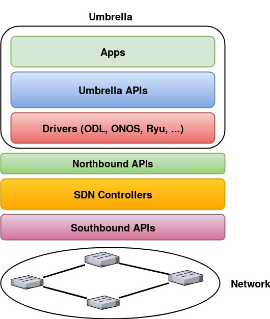

Overview¶
The Northbound (NB) APIs that SDN controllers provide differ in terms of architecture, syntax, naming convention, data resources, and usage. Using NB APIs to write SDN applications makes each application dependent on the API of a specific controller. To bring NB APIs from different vendors under one umbrella and make programming of SDN applications independent of specific controllers, we designed and implemented a unified software defined development framework that we call Umbrella. The main design goals are as follows:
- Design and implement a development framework that provides a new set of abstractions for SDN applications, keeping the abstractions independent of the NB APIs used by specific SDN controllers.
- Design and implement a set of modules that use the proposed abstractions to provide information needed by SDN applications, such as topology, network statistics, and real time topology changes.
- Increase portability of SDN applications across SDN controllers, and make it easy for a programmer to evaluate a specific application on multiple SDN controllers (e.g., to compare performance).
- Provide a software defined network programming framework that reduces programming complexity, allows a programmer to write SDN applications without requiring a programmer to master low-level details for each SDN controller, and avoids locking an application to a specific controller.
Umbrella Architecture¶
We illustrate Umbrella architecture as follows:
Getting Started¶
Installation¶
First, clone umbrella repository using the following command:
$ git clone https://github.com/umbrella-project/umbrella
Umbrella is a Java based platform. In order to be able to compile the code, you need to install Oracle Java 1.8 and Maven using the following commands:
$ sudo apt-get install software-properties-common -y && \ $ sudo add-apt-repository ppa:webupd8team/java -y && \ $ sudo apt-get update && \ $ echo "oracle-java8-installer shared/accepted-oracle-license-v1-1 select true" | sudo debconf-set-selections && \ $ sudo apt-get install oracle-java8-installer oracle-java8-set-default -y
$sudo apt-get install maven
Finally, compile the project using the following command:
$ cd umbrella $ mvn package
Run a Sample Application¶
To run an SDN application that we implemented using Umbrella APIs, we can use the following commands:
$ cd umbrella
$ mvn package
$ java -cp target/umbrella-[Version]-SNAPSHOT-jar-with-dependencies.jar apps.[Application filename]
Sample Applications¶
Forwarding Application¶
Suppose we would like to write an application to route traffic between all of the hosts that belong to the same subnet. To achieve this goal, we implement an application using Umbrella APIs to generate and install appropriate forwarding rules on the switches between each two hosts. We explain step by step how to write the mentioned application:
- First, we need to create an instance of the controller that we would like to execute our application on. We assume that the name of controller will be passed as an argument to the forwarding application.
if (args.length < 1) {
System.out.println("Arguments: onos/odl");
}
Controller controller;
if (args[0].equalsIgnoreCase("onos")) {
controller = new OnosController();
} else if (args[0].equalsIgnoreCase("odl")) {
controller = new OdlController();
} else {
return;
}
- Second, we need to get the list of current hosts that have been detected by the controller.
Set<TopoHost> srchosts = controller.getHosts();
Set<TopoHost> dsthosts = controller.getHosts();
Third, we need to do the following steps:
- We compute shortest path between each two hosts to determine which network switches should be configured between the given hosts.
- We generate flow rules based on source and destination MAC addresses, source and destination IP addresses, and Ethernet type (IPv4 in this example).
- Finally, we install generated flow rules on determined network switches.
for(TopoHost srcHost: srchosts)
{
for(TopoHost dstHost: dsthosts)
{
if(!srcHost.equals(dstHost))
{
String srcMac = srcHost.getHostMac();
String dstMac = dstHost.getHostMac();
path = controller.getShortestPath(srcHost.getHostID(),
dstHost.getHostID());
controller.printPath(path);
for(TopoEdge edge : path) {
if(edge.getType() == TopoEdgeType.HOST_SWITCH) {
continue;
}
FlowMatch flowMatch = FlowMatch.builder()
.ethSrc(srcMac)
.ethDst(dstMac)
.ipv4Src(srcHost.getHostIPAddresses().get(0))
.ipv4Dst(dstHost.getHostIPAddresses().get(0))
.ethType(2048)
.build();
FlowAction flowAction = new FlowAction(FlowActionType.OUTPUT,
Integer.parseInt(edge.getSrcPort()));
ArrayList<FlowAction> flowActions = new ArrayList<FlowAction>();
flowActions.add(flowAction);
Flow flow = Flow.builder()
.deviceID(edge.getSrc())
.tableID(0)
.flowMatch(flowMatch)
.flowActions(flowActions)
.priority(1000)
.appId("TestForwarding")
.timeOut(300)
.build();
controller.flowService.addFlow(flow);
}
}
}
}
Testing the Forwarding Application on ONOS controller¶
- In this section, we explain a Mininet simulation scenario that can be used to test the forwarding application on ONOS controller:
First, you need to install and run ONOS on your local machine using the guidelines that have been posted on ONOS website: ONOS GUIDES
Second, you need to download and install Mininet using the guidelines that have been posted on Mininet website: Mininet
Third, execute the following commands to run a Mininet simulation scenario that simulates a leaf-spine network topology with 6 hosts:
$ cd mininet_examples $ sudo python leaf_spine.py
Forth, run pingall to detect all of the hosts in the network topology. ONOS runs a reactive forwarding application by default.
Fifth, package umbrella source codes using the following command:
$ mvn package
Finally, execute the application using the following command to install rules on network switches:
$java -cp target/umbrella-1.0-SNAPSHOT-jar-with-dependencies.jar apps.Forwarding onos
Testing the Forwarding Application on OpenDayLight controller¶
First, you need to install and run ONOS on your local machine using the guidelines that have been posted on ONOS website: ODL GUIDES
Second, you need to download and install Mininet using the guidelines that have been posted on Mininet website: Mininet
Third, execute the following commands to run a Mininet simulation scenario that simulates a leaf-spine network topology with 6 hosts:
$ cd mininet_examples $ sudo python leaf_spine.py
Forth, run pingall to detect all of the hosts in the network topology. ONOS runs a reactive forwarding application by default.
Fifth, package umbrella source codes using the following command:
$ mvn package
Finally, execute the application using the following command to install rules on network switches:
$java -cp target/umbrella-1.0-SNAPSHOT-jar-with-dependencies.jar apps.Forwarding odl